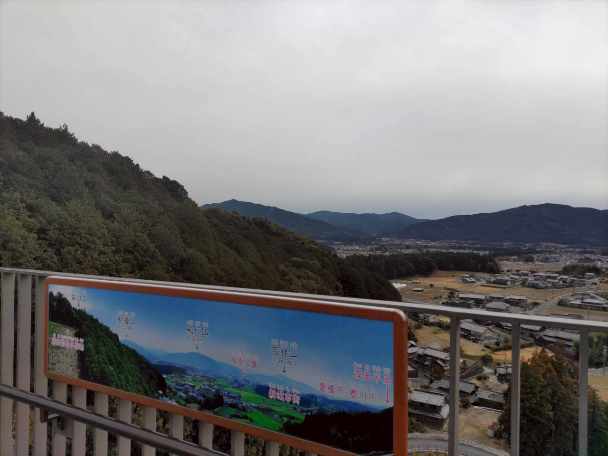
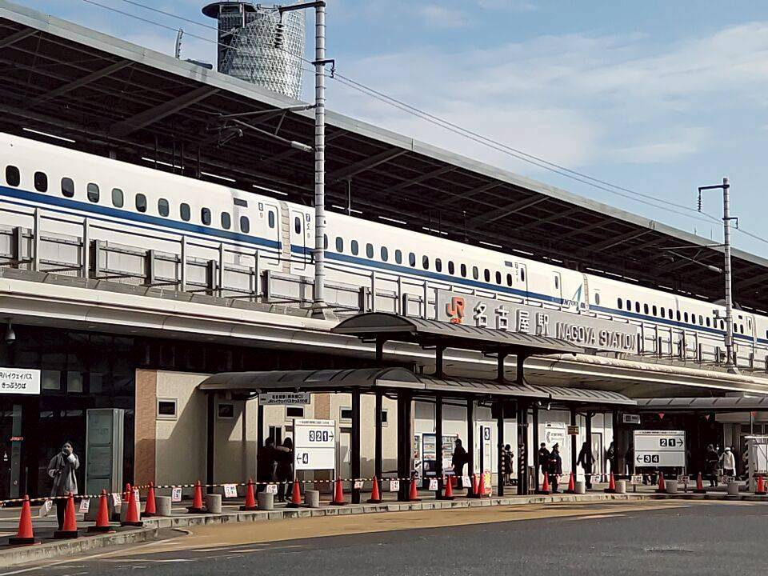
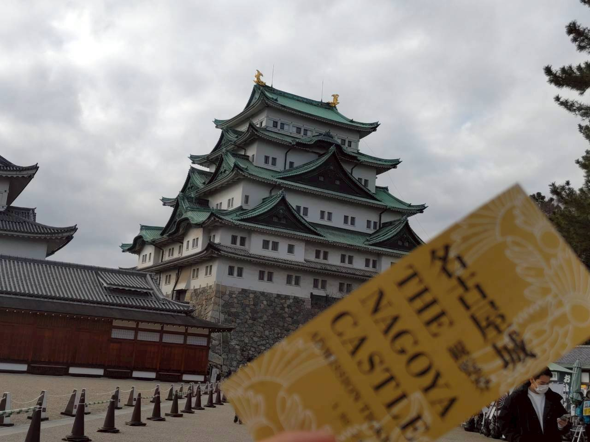
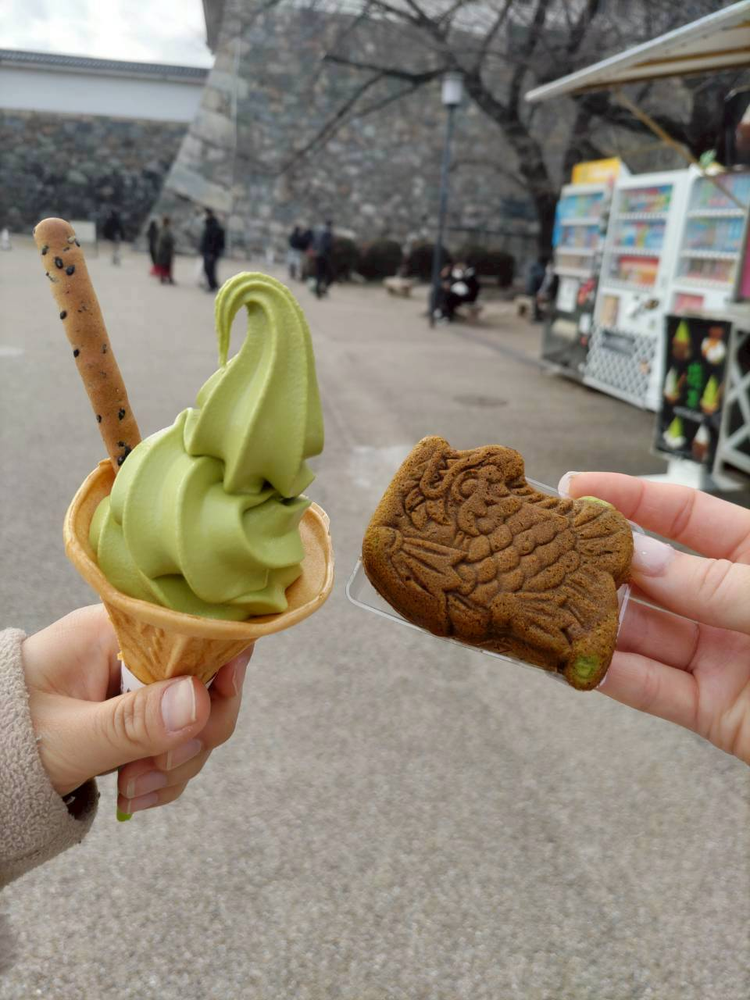
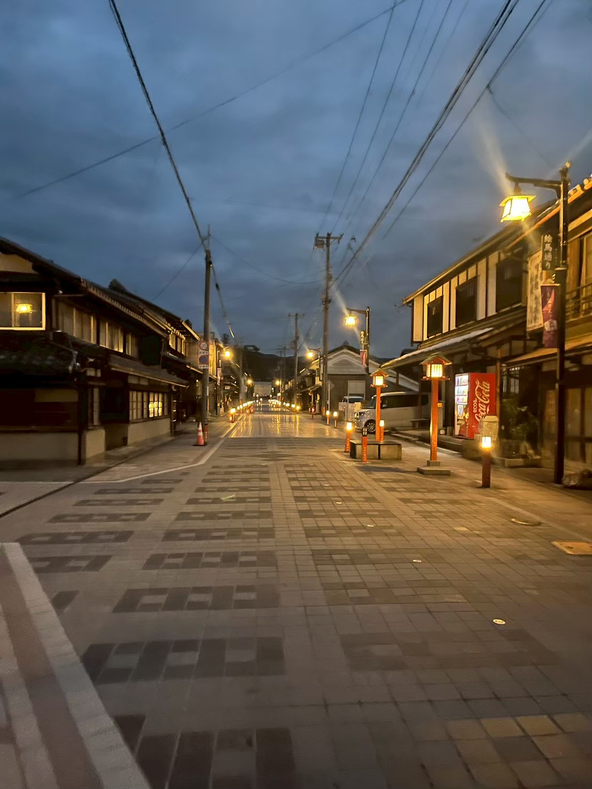
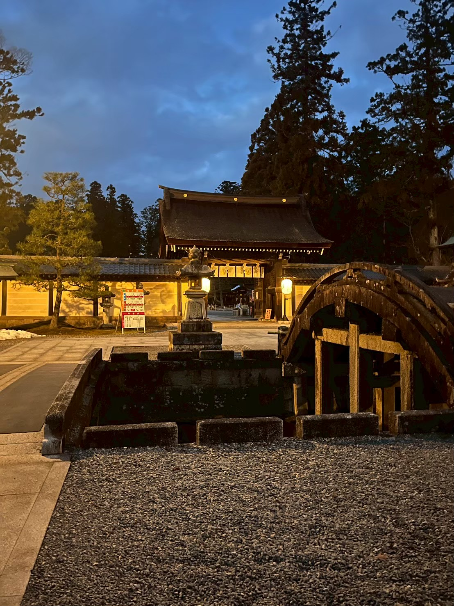
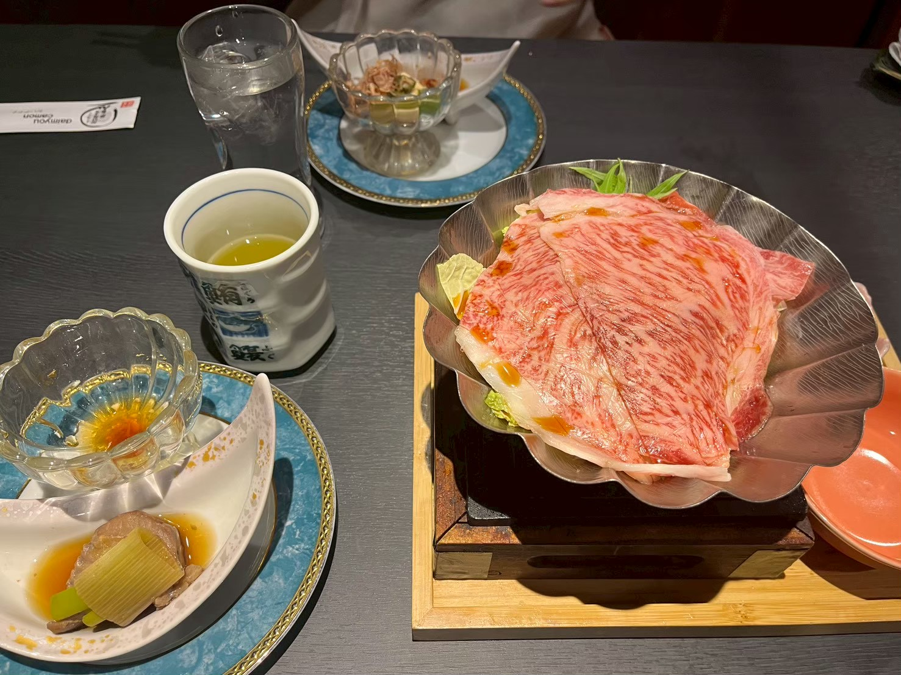

【滋賀女子旅 Day1】
「名古屋に寄り道して滋賀へ！」

Trip Info
Place 滋賀
Date 2026.02.07〜09
Transport 電車・バス
皆様こんにちは。ミナです。
今回は大学の友達と滋賀旅行に行きました。
二人ともまだ行ったことのない県に行こう！という話になって選んだ旅先ですが、今まで行っていなかったことを後悔するくらい素敵な場所でした。
今回は楽天トラベルで予約した高速バスを利用していきます！〈東京→名古屋 3600円〉
まずは静岡着。
このときにちょうど寒波が襲ってきていて、この時点で雪が降ってます。

愛知県入りです。
近くに展望台的なところがあったので登ってみました。
そういえばここのSAで「わらじ揚げ（醤油）」〈600円〉を買ったのですが、これが本当に美味しかったので、まじでおすすめです！

乗り換え場所の名古屋まで着きました。
名古屋に来るのは初めてで、ワクワクしました。
ここでしばらく時間があるので、爆速で名古屋といえばの「名古屋城」を見に行きます！

はじめまして名古屋城。
入場券は大人500円です。

おなかも空いたので、抹茶ソフトも買ってみました！〈550円〉
初の金のしゃちほこに感動しました。
さて観光もぼちぼちに、滋賀に向かって行きます。
JR東海のバス〈1700円〉で、滋賀の「名神多賀」まで向かいます。
名神多賀のSA？で降りたのですが、こういったSAから外に出るのは初めてで緊張しました。
降りるところが合っているのか不安なまま、徒歩で駅まで向かって行きます。
駅にたどり着いたはいいものの、まだ時間があったので、駅周辺を散歩することに。

空が暗くなってきているのと、私たちのほかに人がいないのも相まって、なんだか異世界に来てしまったかのような気持ちになりました。

中にはもう入れませんでしたが、大社前のここだけでとても雰囲気がありました。
たまたま立ち寄ったスポットですが、かなりお気に入りです。
次はここもちゃんと回りたいです。
本日泊まる彦根駅に着きました。
これから本日の夕飯探しに行きます。

せっかくなので近江牛を食べたい！
ということで、近江牛が食べられそうなお店に入ってみました。
金欠大学生の精一杯の贅沢です笑。
今回泊まったのは「コンフォートホテル彦根」です。
リーズナブルかつ快適に過ごすことができました。
この後はすぐにお風呂に入り就寝です。
今回の旅記録は以上です。
ここまでご覧いただきありがとうございます。
次回のブログも是非見てください♪
ではまた！